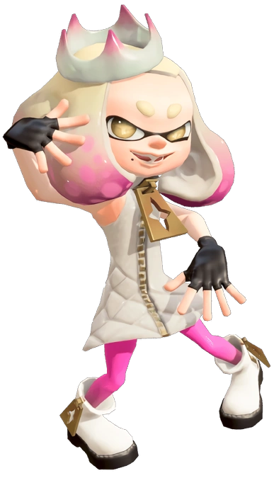
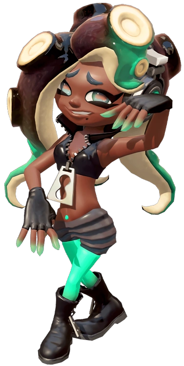

Off the Hook is a pop idol duo based in Inkopolis Square consisting of Pearl and Marina. In Splatoon 2, they replace Splatoon's Squid Sisters as the hosts of Inkopolis News and Splatfest events.

Pearl
Pearl Houzuki is one of the two band members of Off the Hook, along with Marina. In Splatoon 2, she co-hosted Inkopolis News and Splatfest events, replacing the role of the Squid Sisters from the first game.

Marina
Marina Ida, also known as DJ_Hyperfresh, is one of two members of Off the Hook, and the replacement for the Squid Sisters in Splatoon 2 as the host of Inkopolis News in their studio within Inkopolis Square